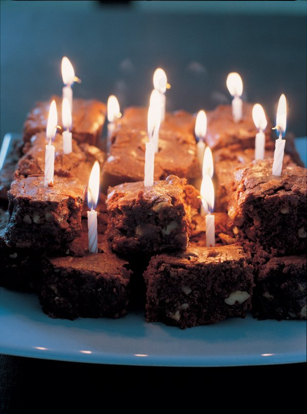

Nigella Lawson

I don't know why people don't make Birthday Brownies all the time —
they're so easy and so wonderful. Brownies are much quicker to make
than a cake, and they look so beautiful piled up in a rough-and-tumble
pyramid spiked with birthday candles.
Source
Makes: maximum of 48
- 375 grams soft unsalted butter
- 375 grams best-quality dark chocolate
- 6 large eggs
- 1 tablespoon vanilla extract
- 500 grams caster sugar
- 225 grams plain flour
- 1 teaspoon salt
- 300 grams chopped walnuts
You will need a tin measuring approximately 33 x 23 x 5.5cm / 13 x 9 x 2.25 inches
- Preheat the oven to 180°C/160°C Fan/350°F/gas mark 4.
Line your brownie pan — I think it's worth lining the sides as well
as the base — with foil, parchment or Bake-O-Glide.
- Melt the butter and chocolate together in a large heavy-based pan.In a
bowl or large wide-mouthed measuring jug, beat the eggs with the sugar
and vanilla. Measure the flour into another bowl and add the salt.
- When the chocolate mixture has melted, let it cool a bit before beating
in the eggs and sugar, and then the nuts and flour. Beat to combine
smoothly and then scrape out of the saucepan into the lined pan.
- Bake for about 25 minutes. When it's ready, the top should be dried to
a paler brown speckle, but the middle still dark and dense and gooey.
And even with such a big batch you do need to keep alert, keep checking:
the difference between gungy brownies and dry brownies is only a few
minutes; remember that they will continue to cook as they cool.
You can really vary brownies as you wish: get rid of the walnuts,
or halve them and make up their full weight with dried cherries;
or replace them with other nuts — peanuts, brazils, hazelnuts — add
shredded coconut or white chocolate chips or buttons; try stirring in
some Jordan's Original Crunchy cereal. I had high hopes for chic,
after-dinner pistachio-studded brownies, but found the nuts get too soft
and waxy, when what you need is a little crunchy contrast.
Homepage